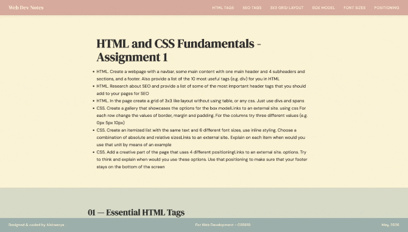

Web Dev Notes
A single-page reference document covering core web development concepts — built as a hands-on exercise in semantic HTML, CSS fundamentals, and layout without shortcuts.
What made it interesting was the constraint: a 3×3 grid using only
div and span with
display: inline-block — no CSS grid, no flexbox, no
table. The box model gallery demonstrates border, margin, and
padding at 0px, 5px, and 10px side by side. Font sizing covers six
units in one view. CSS positioning is explained through an office
desk metaphor that actually makes sense.
Semantic HTML
10 essential tags with real usage, SEO meta, and proper document structure.
Box Model Gallery
Border, margin, padding demonstrated visually at 0px, 5px, and 10px in a grid.
Font Size Units
Same text in px, em, rem, %, pt — with explanations inline.
CSS Positioning
Static, relative, absolute, fixed — demonstrated through an office desk metaphor.
